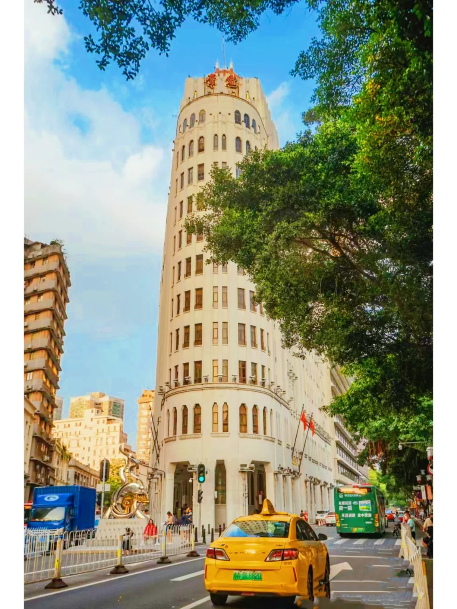
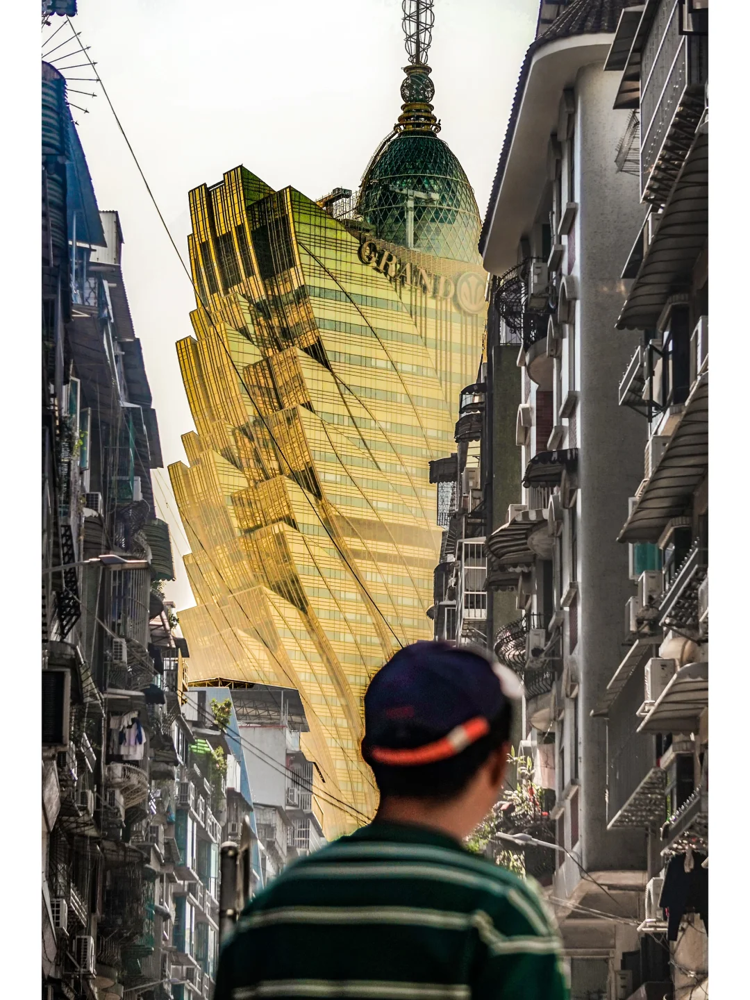
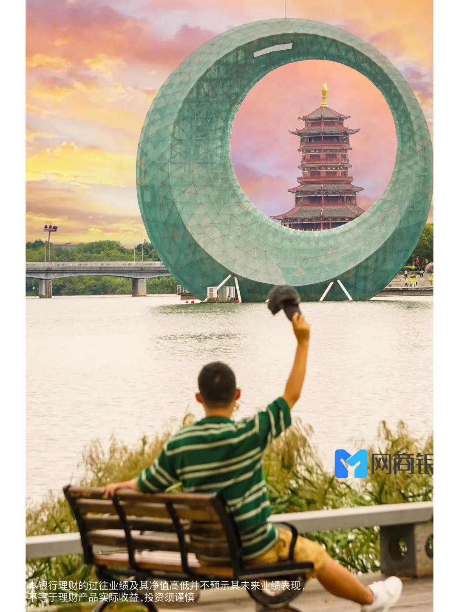
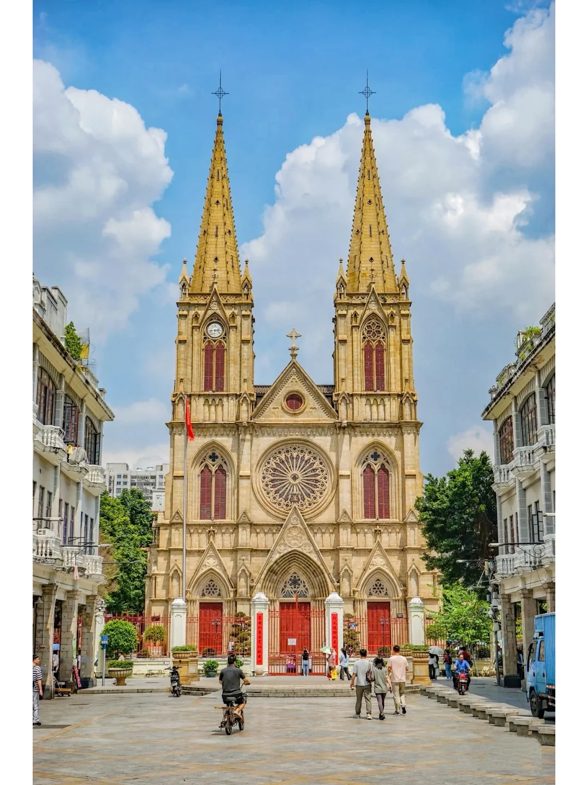

CHAPTER 05
视觉系统
基于封面图分析（已下载 TOP 8 + 末尾 2 张原始封面做视觉分析）。
🎨 视觉系统特征
🎨 滤镜风格
- 高饱和暖色调（橙黄夕阳 + 蓝天）
- 黄金时刻构图（傍晚/清晨）
- 低明度阴影保留细节
- 不依赖滤镜后期，原片素质高
📐 构图特征
- 摄影师视角（避开人群、前景引导）
- 用人物作对比（渺小感/震撼感）
- 9/16 竖屏为主（小红书标准）
- 网格拼图（广东21城这种总结型）
🖼️ 封面排版
- 90% 是纯图片封面（无大文字）
- 10% 用黄色描边大字报（地名+数字）
- 底部不加水印/Logo
- 图片就是全部钩子
📸 爆款封面视觉分析






⚠️ 视觉系统可复制性
可学的：构图思路（人作对比/前景引导）、黄金时刻拍摄、网格拼图模板。
难学的：摄影技能本身（避开人群+角度选择+瞬间抓拍）需要 3-5 年积累，单纯"调滤镜"模仿会显得廉价。
机会点：他 0 视频内容，如果切入视频赛道（vlog/citywalk/机位解说），能在他的视觉基础上做差异化。